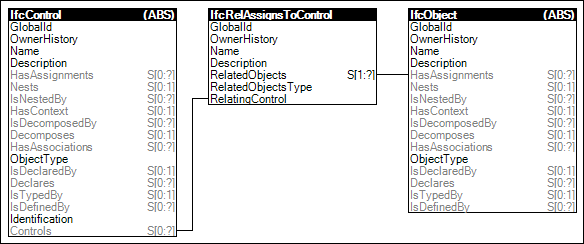

Link to this page
Link to this pageControls may have assignments indicating objects that must observe the established requirements. An example of such assignment is a labor resource assigned to a calendar.
Figure 70 illustrates an instance diagram.
 |
Figure 70 — Control Assignment |